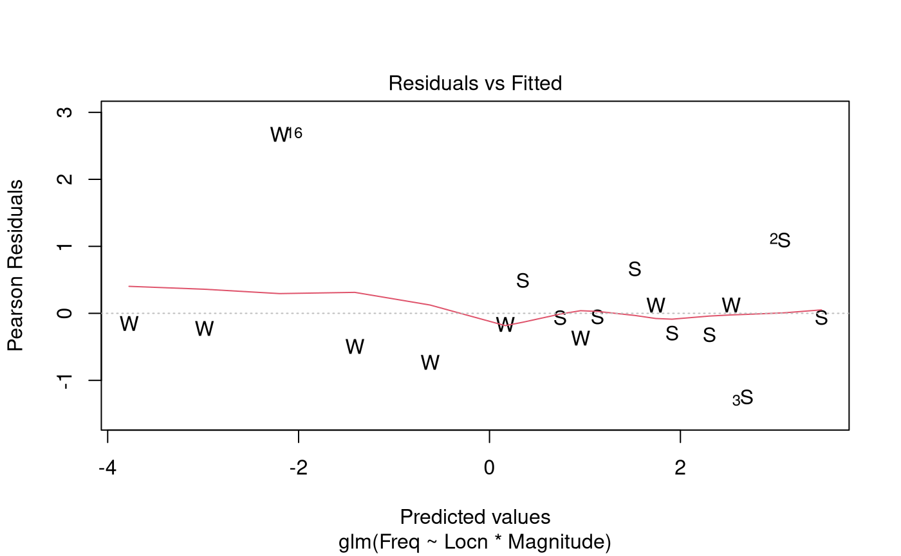

Case Study 14.1: Decline in expected earthquake numbers with magnitude
Source:vignettes/articles/CS14_1.Rmd
CS14_1.RmdProblem
The Gutenberg-Richter law says that the expected frequency of earthquakes decreases multiplicatively with their magnitude. The formula is where is the expected number of earthquakes of magnitude or more on the Richter scale. Here, and are unknown parameters.
After applying a healthy dash of calculus, this formula can be re-expressed in a form that is more familiar to us where is the number of number of earthquakes of magnitude between and .
The variables of interest were:
-
Magnitude: The strength of a recorded earthquake. -
Locn: A two-level factor which describe the location of the earthquakes.- It has two levels Southern California (“SC”) and Washington (“WA”).
-
Freq: The number of earthquakes recorded atLocnwith magnitudeMagnitude.
Question of Interest
The research question is to quantify the rate of decrease in earthquake frequency (with increasing magnitude) in both California and Washington states, and to assess whether these rates are the same.
Read in and Inspect the Data
Quakes.df = read.table("EarthquakeMagnitudes.txt", header = TRUE)
Quakes.df$Locn = as.factor(Quakes.df$Locn)
Quakes.df
plot(Freq ~ Magnitude, data = Quakes.df, pch = substr(Locn, 1, 1))## Locn Magnitude Freq
## 1 SC 5.25 32
## 2 SC 5.50 27
## 3 SC 5.75 10
## 4 SC 6.00 9
## 5 SC 6.25 6
## 6 SC 6.50 6
## 7 SC 6.75 3
## 8 SC 7.00 2
## 9 SC 7.25 2
## 10 WA 5.25 13
## 11 WA 5.50 6
## 12 WA 5.75 2
## 13 WA 6.00 1
## 14 WA 6.25 0
## 15 WA 6.50 0
## 16 WA 6.75 1
## 17 WA 7.00 0
## 18 WA 7.25 0The plot is consistent with an exponential decreasing relationship between frequency and magnitude. It is unclear whether the multiplicative rate of decay is the same in the two locations.
Model Building and Check Assumptions
Quake.gfit = glm(Freq ~ Locn * Magnitude, family = poisson, data = Quakes.df)
plot(Quake.gfit, which = 1, pch = substr(Quakes.df$Locn, 1, 1))
plot(Quake.gfit, which = 4)Observation 16 has a largish residual, but as this observation has a very small fitted value of this can be ignored.
summary(Quake.gfit)##
## Call:
## glm(formula = Freq ~ Locn * Magnitude, family = poisson, data = Quakes.df)
##
## Coefficients:
## Estimate Std. Error z value Pr(>|z|)
## (Intercept) 11.6923 1.1762 9.941 < 2e-16 ***
## LocnWA 7.3923 3.9500 1.871 0.0613 .
## Magnitude -1.5648 0.2055 -7.616 2.61e-14 ***
## LocnWA:Magnitude -1.5884 0.7199 -2.206 0.0274 *
## ---
## Signif. codes: 0 '***' 0.001 '**' 0.01 '*' 0.05 '.' 0.1 ' ' 1
##
## (Dispersion parameter for poisson family taken to be 1)
##
## Null deviance: 176.1767 on 17 degrees of freedom
## Residual deviance: 8.2295 on 14 degrees of freedom
## AIC: 65.11
##
## Number of Fisher Scoring iterations: 5
1 - pchisq(8.23, 14)## [1] 0.8770025## Waiting for profiling to be done...## 2.5 % 97.5 %
## (Intercept) 1.271578e+04 1.293907e+06
## LocnWA 1.444417e+00 9.271450e+06
## Magnitude 1.374743e-01 3.082437e-01
## LocnWA:Magnitude 4.150846e-02 7.235657e-01## Waiting for profiling to be done...## 2.5 % 97.5 %
## -86.25257 -69.17563Additional Output with WA as the baseline Level
Quakes.df$Locn = relevel(Quakes.df$Locn, ref = "WA")
Quake2.gfit = glm(Freq ~ Locn * Magnitude, family = poisson, data = Quakes.df)
exp(confint(Quake2.gfit)) # Row 3 gives multiplicative annual change in WA## Waiting for profiling to be done...## 2.5 % 97.5 %
## (Intercept) 2.691111e+05 8.426878e+11
## LocnSC 1.078580e-07 6.923209e-01
## Magnitude 9.077661e-03 1.401754e-01
## LocnSC:Magnitude 1.382045e+00 2.409148e+01## Waiting for profiling to be done...## 2.5 % 97.5 %
## -99.09223 -85.98246Methods and Assumption Checks
The response variable, earthquake frequency, is a count, so we fitted a generalised linear model with a Poisson response distribution. We have two explanatory variables: Magnitude (Numeric) and Location (Categorical). The scatterplot of magnitude vs frequency showed an exponentially decreasing trend for both locations. We fitted a Poisson model with interaction between magnitude and location. The interaction was significant (P-value 0.03) so it was retained for the final model.
All model assumptions were satisfied. There was no evidence of overdispersion so we can trust the results from the Poisson model.
For our final model, we assume the number of earthquakes in observation is Poisson(), where and where is 1 if observation was in Washington State and 0 otherwise, and is the magnitude of earthquakes that are being counted in observation .
Executive Summary
The research question is to quantify the rate of decrease in earthquake frequency with increasing magnitude in both California and Washington states, and to assess whether these rates are the same.
The rate of decline in the frequency of earthquakes with increasing magnitude is more rapid in Washington than California.
In Washington, there is a 86.0% to 99.1% drop in the expected number of earthquakes for a one unit increase in their magnitude on the Richter scale.
In California, the corresponding decrease is between 69.2% and 86.3%.